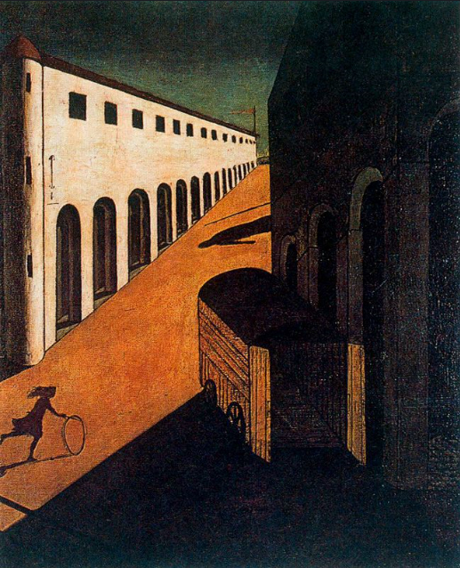
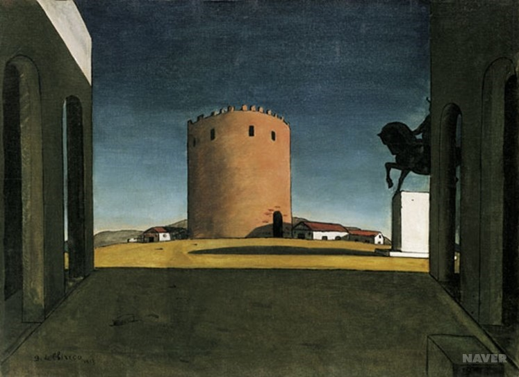

초현실주의(Surrealism) 운동은 다다운동에 참여했던 일부 예술가들에 의해 주도되었다. 그 중 일찌기 프로이트의 저작을 접하고, 초현실주의에 관한 출판물을 출간한 앙드레 브르통은 1922년, 다다가 제도화되고 아카데믹하게 되어 간다는 이유로, 점차 다다에 환멸을 느끼게 된다. 심지어 파리다다를 해산시키는 반란을 이끌기도 하였다.
브르통은 피카비아, 만레이, 에른스트 등과 함께 자동기술, 꿈의 세계, 프로이트의 무의식의 세계를 탐구하는 일을 계속하였고, 그리하여 1924년, 초현실주의 선언을 통하여 다음과 같이 초현실주의를 정의하였다.
초현실주의는 순수한 자동주의로 생각의 실제과정을 말이나 글, 혹은 다른 방식으로 표현하는 것이다. 다시말해서 이성이 행사하는 모든 통제로부터 벗어난, 모든 미학이나 도덕적 선입견을 벗어난 생각을 받아쓰는 것이다.

1925년 초현실주의자들은 파리의 갤러리 피에르에서 첫 합동전시회를 갖는다. 대표적인 화가는 막스에른스트, 조르조 데 키리코, 르네 마그리뜨, 호안 미로였다.
초현실주의자들은 칼 융과 시그문트 프로이드의 정신분석학에 영향을 받아 잠재의식이나 무의식을 통해 환상,꿈, 악몽, 광기, 비정상 등을 소재로 다루었다. 또한, 경험의 경계를 넘어 현실을 잠재적인 꿈의 경험과 융합시키려 하였으며, 현실자체를 바라보는 시각을 확장시켜, 절대적인고 초월적인 현실에 도달하였다. 또한 이들은 자동기술법과 데페이즈망 기법을 사용하였다.
여기에서 초월적인 현실이란, 꿈과 현실 간의 대립이 해소되는 순간을 의미하고 있으며, 그리하여 1930년에 발표한 제2 초현실주의 선언에서는 "삶과 죽음, 실제와 상상, 과거와 미래, 이해 가능한 것과 이해 불가능한 것, 낮은 것와 높은 것이 더 이상 모순으로 느껴지지 않는 정신의 어떤 순간이 존재한다" 말했다.
주요작가는 키리코, 살바도르 달리 그리고 르네마그리뜨 등이 있다.
